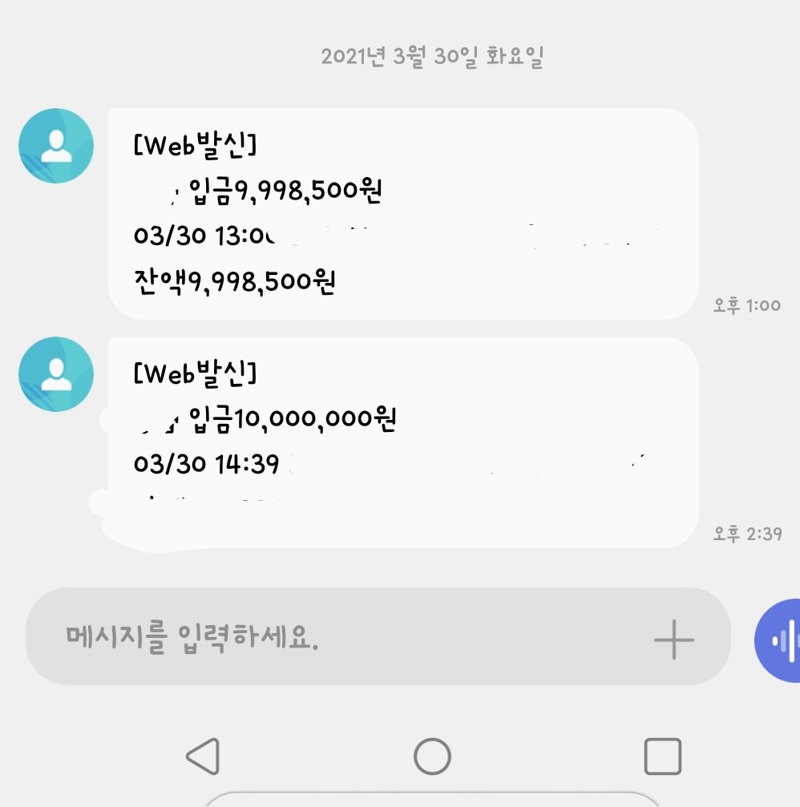

[ 개인회생자대출] 김용혁 이사님 감사합니다~~
41세 여자, 직장인,사대보험 유, 재직 14년, 월219(입금 두곳)만원 수령
재회생 36차중 9회차 납, 미납 없음, 월 98만원 변제금,본인명의 휴대폰 미납 없음
3월8일부로 인가가 나와 다른 상담사님께 의뢰를 드렸지만 변제상황조회가 될 때 하면 더 좋다고 말씀해주셔서 기다리다가 변제상황조회가 되기까지 기다리기 힘들어 이사님께 의뢰드렸고 서류발급받으러 은행가는길에 변제상황조회가 되어 서류중 변제금납부내역서는 필요 없었어요
재회생 진행중 회생중에 받았던 대부업체를 추심으로 민원을 넣었던적이 있었는데 그 기록이 남아 상황이 많이 안 좋았는데 이사님 덕분에 한 곳에서 1000만원 연개사 통해 1000만원 정말 생각지도 못한 한도 받았어요~~ 이사님 정말 감사드립니다
